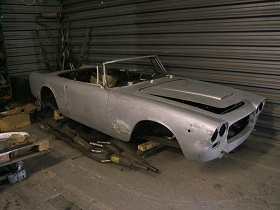

1980 MGB GT LE,Ex Peter Grant (Manager of Led Zepplin).
On offer here is a near unique opportunity to acquire one of Peter Grants (manager of Led Zepplin amongst many others),cars.
As well as a larger than life figure in the music industry,Peter was also a known car enthusiast.
This Limited Edition,last of the line B GT,was first registered LZ 1,and is believed was sold by Grant at the time of his divorce.
With few owners since,it has covered just 47k miles and in more recent years has been restored and maintained to a very high standard.
More details and pictures to follow shortly,please contact us to discuss further.
Any inspection welcome.

1955 ALVIS TC21/100 GREY LADY.
A very nice,stylish Alvis Grey Lady in two tone blue/grey with full,grey leather interior.
Very smart and sound example.
Please enquire for more details.
Any inspection welcome.

VERY RARE 1926 SINGER 10/26 2 SEAT OPEN TOURER.
Here is a charming Singer 10/26 2 seat open tourer from 1926.Imported from the Sidney area of Australia in 2000.
Confirmed as being built in November 1926,it has a straight 4,1308cc ohv engine,coupled to a 3 speed ,plus reverse gearbox and rod brakes to the rear.
4 owners since repatriation to the UK.
Any inspection welcome.

PEUGEOT,PININFARINA 504 CABRIOLET.
Just arrived is this super example of the very elegant and stylish,Pininfarina designed Peugeot 504 Cabriolet.
In white with black interior,low miles,corrosion free and in excellent condition,all round.
Please enquire for more details.

2001 BMW 320Ci Cabriolet.
Superb 6 cylinder BMW 320Ci Cabriolet with M Sport alloys.In silver with contrasting black leather.Maintained to a very high standard,runs,drives and looks fantastic!
Low owners and very good history.
More details and pictures shortly.
Please enquire for more details or to arrange a viewing.

2003 ALFA ROMEO 147 GTA,3.2 V6..
Rare opportunity to acquire the ultimate 147.A 2003 GTA,with the 3.2 V6 Busso engine.
Requires some recommissiong/restoration work to return to road but comes with FSH,and upgrades.
Please enquire for more details.
More details and pictures very shortly.

1987 CITROEN CX25 GTI.
Very nice Citroen CX25 GTI in champagne with full leather.Originally sold new to Australia,but back in the UK for many years.
Very sound bodywork and very good mechanics and with an extensive history file.
Please enquire.
More details and pictures very shortly.

LOVELY 1950'S LES VINCE (OF BATH),RACING BIKE.
Here is a really lovely 1950's period,Les Vince racing bike.Les Vince owned a cycle shop in Bath,Somerset post WW2 and as well as selling bikes,had his own built for clients.
Just fully refurbished and ready for new travels and adventures and a perfect candidate for an Eroica event.
All bicycles can be posted in proper bike boxes at a cost of £44 for mainland UK.
More classic cycles available on page 3 of Our Cars.

2001 SAAB 93 AERO,Just 2 owners and 88k miles with FSH.
Very nice low mileage,very low owner Saab 93 Aero.In silver with contrasting black leather.Electric everything,including sunroof.Drives very nicely and presents well.
More details and pictures to follow shortly.
Please contact us to arrange viewing.

BARN FIND LANCIA APRILIA'S.
Just arrived,2 barn find Lancia Aprilia Berlinas.Both for full restoration but complete and awaiting revival from their long term slumber!
A highly advance motor car and the last Lancia overseen by Vincenzo Lancia,the brands founder.Designed with the use of a wind tunnel,with monocoque constructed bodyshell and a lovely,V4 engine coupled to a slick 4 speed gearbox.
Please enquire for further details or to arrange a viewing..

1998 S1 LOTUS ELISE,Just 1 owner and 6k miles!
Possibly a unique opportunity to acquire a 1 owner from new,series 1 Lotus Elise with just 6k miles on the clock!
More details and pictures to follow very shortly.
Please enquire for more details or to arrange a viewing.

ARGO JM3,Formula 3.
Argo were the racing arm of Anglia Cars,started by ex Lotus and McLaren designer Jo Marquet.They experienced notable success in F3 and sports car racing.
This JM3 was originally sold to Bruno Eichmann for the Swiss F3 series and was and still is fitted with the 2ltr Heideggier BMW engine,with Kuglefischer injection.
Eligible for UK,Europe and US racing series.
Please enquire for more details.
Any inspection welcome.
.5.jpg)
2003 MASERATI 4200 CAMBIOCORSA.
Previously sold by us a stunning Maserati 4200 in one of the best colour combinations of Sebring Blue with blue/cream leather and just 54k miles.
Very nice all round condition and with extensive service history.
Please message for more details.
More details and pictures shortly.
Any inspection welcome.

1963 LANCIA FLAMINIA TOURING CONVERTIBLE,2.8 3C. 
A great opportunity to acquire a rare Lancia Flaminia Convertible 2.8 3c,restoration project.
Completey solid and completely original structure requiring no welding,sound alluminium bodywork,albeit requiring some fettling,a fully rebuilt,correct Touring 2.8 3c
engine ready to fit and seats retrimmed.
Originally sold new in Italy to an english gentleman,presumably brought back to the UK with said individual?
Stripped and with plenty of work to do,but what you see is what you get,so much easier to judge where the time needs to be spent.
Please contact us for more details..
Any inspection welcome.